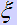
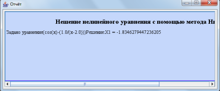

Решение нелинейных уравнений методом Ньютона
Практическая часть
Теоретическая часть
Метод пригоден для решения алгебраических и трансцендентных уравнений. Пусть f(х)=0 имеет на [a,b] единственный корень . На отрезке [a,b] функция удовлетворяет следующим условиям:- она непрерывна вместе со своими производными до второго порядка включительно;
- на концах интервала функция принимает значения разных знаков;
- производные, не равные нулю, сохраняют определённый знак.
-уравнение касательной
Далее находится x2 – пересечение этой касательной с осью OX
(y2 в точке пересечения равно 0).
В результате получается:
Выразив x2 получим:
-угол наклона касательной
Проектируем x2 на нашу кривую, получаем точку M2. Через точку M2
проводим касательную к нашей кривой, точка пересечения которой с осью OX даёт нам третье приближение корня и т.д.
Продолжив описанный процесс построения касательных и вычисления точек их пересечения с осью OX.
В результате получим формулу метода Ньютона:
n=1,2,3, ...
Достаточное условие сходимости:
Пусть и сохраняют определённые знаки на отрезке [a,b].
Тогда для любого x, принадлежащего [a,b] и удовлетворяющего условию f'(x)*f"(x)>0, метод Ньютона сходится.
При выполнении этого условия, приближение xn+1 будет лежать между xn и
x0, т.е. ближе к корню. При возрастании n приближений, xn
монотонно стремится к точному решению.
Практическая часть
Пошаговые действия |
Пояснения к действиям |
| 1. Заходим в программу. Появляется окно, на котором выбираем категорию методов "Методы решения нелинейных уравнений" Выбираем метод "Метод Ньютона". Нажимаем кнопку "PUSH". | |
| 2. Появляется окно, показанное на рисунке слева. Записываем в поле f(х) уравнение, которое нужно решить. Задаем интервал [a,b] с помошью кнопок "+", "-". Если нажать "+" появятся поля для ввода интервала. | |
| 3. После выполнения всех действий, внизу, в поле "Решение" появится ответ. | |
| 4. Чтобы просмотреть график уравнения, нужно нажать кнопку "Просмотреть график". Появится график, как на рисунке слева. | |
|  | 5. После того, как вы получили ответ, можно просмотреть отчет, где предоставлено поэтапное решение. Для этого необходимо в главном меню программы, расположенном на верху экранной формы выбрать пункт "Отчет/Просмотр отчета". Вы увидите окно, расположенное слева. Также можно сохранить этот отчет нажав кнопку главного меню "Отчет/Сохранить отчет". |
 |
6. Если решение примера может пригодится вам в будущем, вы можете сохранить его с помощью конпки меню "Файл/Сохранить". В окне, которое появится(оно показано на рисунке слева) необходимо выбрать папку, в которую он сохранится и написать название. |